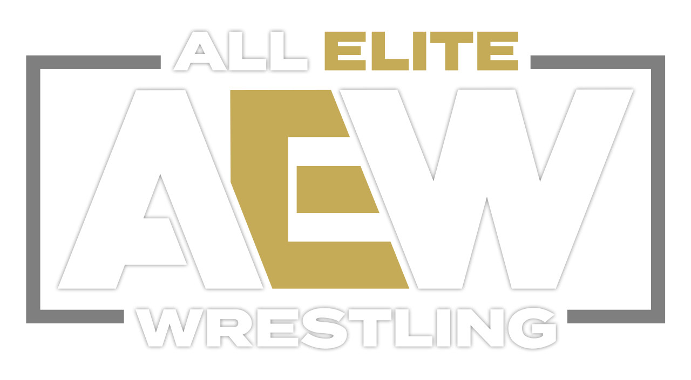
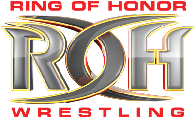
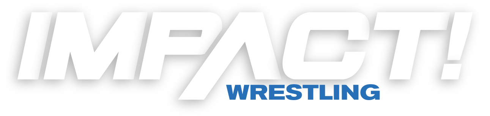
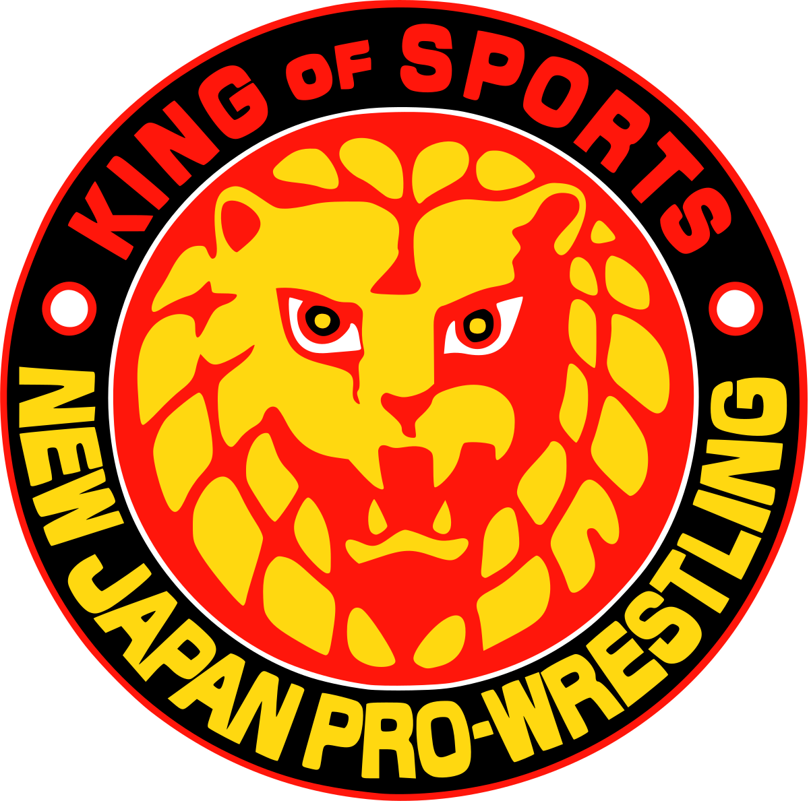

La WWE (anciennement WWF) est la compagnie la plus connu du monde du catch, elle ne présente dans son rooster que des superstars qui finissent à Hollywood comme The ROCK ou encore JOHN CENA et est dirigé par son Chairman, Vince McMahon
Découvre leur site officiel Qui est l'actuel champion ? La AEW est une jeune compagnie fondé par Tony Khan qui existe seulement depuis 2019 mais est la principale compagnie concurrente à la WWE, puisqu'elle recrute toutes les anciennes gloires de la WWE tel que CM PUNK ou encore Bryan Danielson
Découvre leur site officiel Qui est l'actuel champion ? Ring of Honor est une fédération indépendante de catch professionnel basée à Bristol aux États-Unis. Elle a été créée en 2002 par Rob Feinstein et Gabe Sapolsky. La ROH enregistre chacune de ses représentations en DVD qu'elle vend via son magasin en ligne, ce qui a permis l’essor de la Ring of Honor en Amérique mais aussi à travers le monde.
Découvre leur site officiel Qui est l'actuel champion ? Impact (anciennement TNA) est une fédération de catch des États-Unis fondée par Jerry Jarrett et son fils le catcheur Jeff Jarrett en mai 2003. Elle est maintenant la propriété d'Anthem Sport & Entertainment, une société de chaînes de sport de combats canadienne.Elle a notamment eu dans ses rangs des superstars actuelles de la WWE comme JEFF HARDY ou AJ STYLES.
Découvre leur site officiel Qui est l'actuel champion ? New Japan Pro-Wrestling est une fédération majeure de catch japonaise, fondée en juin 1972 par Antonio Inoki. Le style du catch de la NJPW est le Shoot wrestling/Strong style. Avec son programme télévisé diffusé sur TV Asahi, il s'agit de la plus grande fédération de catch au Japon.Elle est notamment très connu puisqu'elle a vu en son sein se fonder une des factions de catcheurs les plus importantes: le BULLET CLUB.
Découvre leur site officiel Qui est l'actuel champion ? 